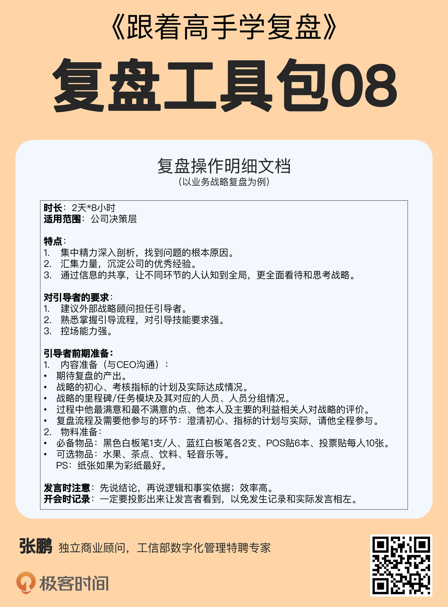

- 00 开篇词 为什么每个人都应该学会复盘？.md.html
- 01 CLAP模型：一个优秀的复盘模型是什么样的？.md.html
- 02 OPTM框架：怎么使用CLAP模型？.md.html
- 03 教练技术：怎么做复盘才能化解冲突？.md.html
- 04 制度和文化：怎么营造复盘环境？.md.html
- 05 三角法：怎么组建复盘团队？.md.html
- 06 MECE原则：怎么准备复盘资料？.md.html
- 07 五步法：如何召开一次高效的复盘会议？.md.html
- 08 事实比较：如何快速比较目标与结果？.md.html
- 09 分析原因：梳理逻辑时怎样找到切入点？.md.html
- 10 洞察规律：怎样更新认知才能找准发力点？.md.html
- 11 OKR：怎样根据复盘结论制定计划？.md.html
- 12 Double Check：怎么检查评估一次复盘的效果？.md.html
- 13 案例导学：我是怎么帮助企业做复盘的？.md.html
- 14 战略升级：5年增长100倍的跨境电商做对了什么？.md.html
- 15 业务关键点：改进一个点业绩增长50%？.md.html
- 16 组织结构设计：变动一个职位，就能带来100万_月的增量吗？.md.html
- 17 高效赋能：怎么建立流程才能把人效提升3倍？.md.html
- 18 人才培养：怎么把人才转化成实际生产力？.md.html
- 19 预算制定：人头和财务预算到底怎么定？.md.html
- 春节荐书（一）《原则》：在不确定中找到确定.md.html
- 春节荐书（二）《人类简史》：故事的力量.md.html
- 结束语 复盘，见天地见众生见自己.md.html
- 捐赠
07 五步法：如何召开一次高效的复盘会议？
你好，我是张鹏。
在前三讲中，我们学习了在复盘会议之前，怎么完成准备工作，包括营造环境、组建团队和准备资料。从现在开始，我们进入到复盘会议阶段。这一讲，我会教你怎么召开一次高效的复盘会议。
复盘会议的要求
请你回想一下，以前参加复盘会议的时候，有没有遇到这样的情况呢？
- 自说自话：每个人抱着“你好我好大家好”的态度各说各的，不关注别人说了什么，就算有提问和回答也完全按照套路走个过场，挖掘不出问题的原因，也提不出有价值的改进方案。
- 节奏拖沓：一场原定2小时的复盘会议，从下午2点搞到晚上8点，原定每个人15分钟到30分钟的时间安排完全失控，那些排在后面的同学，不得不等到很晚才能排上。
想要避免因为这些问题导致复盘不成功，我们首先就要明确复盘会议的要求。复盘会议从本质上说，是公司对组织成长的一种投资行为。公司的任何行为都是要讲ROI（Return on Investment）的，也就是投入产出比（或者叫投资回报率）。
所以，复盘会议也是有要求的：
第一个要求是从产出（Return）的角度看，要结论有效。
在复盘会议中，我们虽然会对前一阶段的工作进行回顾总结，但真正目的是得到指导未来工作的关键建议。所以我们需要形成有效的交流，通过客观对比目标与结果、分析逻辑过程和修正认知，输出有效的结论指导下一阶段的工作。
第二个要求是从投入（Investment）的角度看，要流程高效。
流程是确保目标能够落地的一系列过程节点及执行方式有序组成的过程。好的流程是复盘成功的基础，它能让复盘的参与者按照约定的环节一步一步地推进，从而得出有价值的结论。
复盘操作明细
那么，复盘会议到底要怎么开呢？在第5讲中，我介绍了复盘团队的作用和各个角色的职责分工。其中，辅助者和引导者需要明确复盘的目的、准备、注意事项、会议记录的要求等等，并且形成一个完整的说明，我称之为“复盘操作明细文档”。
这个部分需要在复盘会议正式开始之前和所有参加会议的人同步。我在这里提供了一份针对业务战略复盘的操作明细供你参考，你也可以根据实际需求做出自己的操作明细。

五步法：复盘会议流程
除了操作明细之外，我还总结出了召开复盘会议的五步法，也就是把整个复盘会议流程分成五个步骤：破冰、事实比较、分析原因、洞察规律和制定计划。
接下来我以一次长达16小时（2天*8小时）的业务战略复盘会议为例，为你进行完整的说明。
第一步：破冰
首先是破冰，主要目的是活跃氛围，创造一个平等和开放的对话环境，一般在10分钟以内，具体包括：
- 开场：鼓励每位参与者与身边人拥抱或握手，感谢与身边的人一起在这个项目中奋斗。可以从“早上好（下午好/晚上好），很高兴与你一起共事和奋斗”这样的话开始。
- 引导者讲解复盘会议（以下简称“会议”）的原则，比如客观、开放和中立。
- 引导者说明会议的目的和意义。
- 主持人告诉大家会议的日程安排。
- 主持人说明引导者及参与者这两个角色和他们的主要职责。
第二步：事实比较
破冰结束之后，进入到第二步，目标和结果的对比。这时候需要用到会议之前准备的资料、数据以及白板笔、提前画好数据分析或者写好里程碑的白板纸等工具。
这个部分的时间根据项目或者业务的内容设定，一般2小时左右，具体做法如下。
1. 回顾目标
引导者提问现场所有参与者：
“我们做这个项目的初心（愿景，价值观）是什么？”
“我们原定要达到的目标（过去一年的公司级目标）是什么？”
引导者鼓励大家两两交流，自由发言（第一轮分2人组，尽量采用同工同组的原则）。
最后，引导者邀请相关负责的参与者，一般是CEO（下面直接以CEO来替代）修正和归纳大家的发言结果，并书写在白板纸上。
在回溯目标时不仅有直接的成果或业绩等直观、外显的目标，也可以延伸到团队能力成长、客户满意、品牌形象提升等隐性的目标或收益。
2. 总结结果
引导者将提前收集的结果数据书写在复盘墙上。
然后，引导者会向全体参与者和项目负责人确认、修正。
接下来，引导者会带领大家一起评估结果的达成情况，书写在复盘墙 上。用“ ↑ 、↓ 、0、+、-”分别表示“超出、低于、100%完成、新增和消失”的目标。
最后，引导者邀请CEO修正和归纳大家的发言结果，并书写在白板纸上。
结果尽量用数值或百分比量化呈现。
3. 进行对比
引导者将提前梳理好的战略里程碑、关键里程碑分解挂图张贴在复盘墙上。
接着，引导者向全体参与者和CEO再次确认、修正里程碑的分解结果。
然后，引导者再根据里程碑数量及现场参与人数，将现场成员分组，最好一个组负责一个里程碑，人数少里程碑多，可一组负责两个里程碑。
小组进行研讨：
- 各小组认领负责的里程碑，研讨做得好的部分（GOOD）和待提升的部分(NEED)。
GOOD从结果反推，NEED因为没结果，主要考虑方向是否值得做。
- 为保证能够充分的集思广益，小组成员采用书写式头脑风暴。
每个人先将自己的观点写下来（一个观点写一张小号彩纸），不交流。每人充分思考写完后，再在小组内头脑风暴，汇总意见，筛除重复内容。
- 小组将研讨的成果张贴在相应里程碑挂图对应的阶段上，GOOD写在左半部分，NEED写在右半部分。
接下来，引导者组织开放空间：每个小组留一名成员在本组的里程碑前负责介绍，其他全体成员在场内自由走动，在每个里程碑前驻足，补充自己的看法和观点(用白色小号彩纸)。
最后，引导者请CEO对大家的研讨成果做总结和补充。
第三步：分析原因
接下来进行原因分析，详细操作步骤如下：
- 引导者邀请小组成员聚集到本小组负责的里程碑前，对GOOD和NEED进行可控性分析。
- 小组成员在每条里程碑的原因前进行标记，用实心圆、半实心圆和空心圆分别代表可控、半可控和不可控。
- 各小组分享可控性评估结果，其他小组帮助纠正。最后输出所有成员共识的可控性分析。
- 引导者将项目各里程碑中“半可控和不可控”GOOD项汇总挑出粘贴，将所有“可控和半可控”的NEED项挑出汇总粘贴，其余的移至其他空白墙面处。
（可选）如果现场汇总后的待讨论项过多，可以让大家一起来投票，筛选出分别不超过6条的待分析的 GOOD和NEED，若过多，GOOD首选“半可控”，再选“不可控”（GOOD看客观是否有可复制成功因素），Need首选“可控”，再选“半可控”。（NEED修正主观上的明显缺失）。
第四步：洞察规律
分析完原因，接下来就要看看哪些是成功的关键因素，哪些是失败的关键因素，换句话说，也就是和成功、失败有直接因果关系的因素，这一步就是洞察规律。
GOOD关键因素
- 每组负责讨论本组里程碑的每个GOOD的成功关键因素（本质原因）。
对应的GOOD成功因素用中号彩纸书写，一个成功因素写一张，贴在对应的Good右边。-
小组成员将讨论项后的成功根本因素对应贴在粘贴墙上。
- 各组代表发表研讨成果并相互设问。
每组派代表发表他们的研讨成果，其他小组倾听时，如果认为挖掘的还不够本质，可以随时发问：影响这件事的因素共有多少？哪个是最关键的？为什么一定是它？发表组其它成员根据其他组的设问情况，酌情修订研讨成果。
这里需要注意的是：GOOD关键因素分析多谈客观因素和外因，因为这是可以在未来借鉴和重复利用的。
NEED关键原因
- 每组负责讨论本组里程碑的每个NEED的失败关键因素（本质原因）。
对应的NEED失败因素用中号彩纸书写，一个失败因素书写一张。-
小组成员将讨论项后的失败根本因素对应贴在粘贴墙上。
- 各组代表发表研讨成果并相互设问。
每组派代表发表他们的研讨成果，其他小组倾听时，如果认为挖掘的还不够本质，可以随时发问“为什么？”发表组其它成员根据其他组的设问情况，酌情修订研讨成果。
这里需要注意的是：NEED关键因素分析多谈主观因素和内因，从自身找问题，主挑劣势，因为这是未来改进和提升的重点！
第五步：制定计划
完成第四步之后，就要对接下来的工作做出目标和计划了，一个最简单的原则是错误的事情停下来（Stop doing），正确的事情继续做(Continue doing)，开始没想到又有利于实现目标的事情开始做（Start to do）。在复盘会上，可以分为以下步骤：
- 根据GOOD/NEED挖掘出的本质因素，每组分别讨论本组里程碑中的停止、继续和新增的行动计划。
- 各小组头脑风暴研讨，并书写在中号彩纸上，一个行动计划写一张，并用**“×”“√”“+”标记出停止、继续和新增**的行动计划 。
- 各小组分别发表研讨结果，全体成员及项目负责人进行补充。
这里需要注意的是：
- 书写行动计划尽量用3W原则，WHEN WHO WHAT。
- （可选）挑出“+”行动，识别并分级：组织级、部门级、员工级，力争放在合适的牵头部门，取得最优成果。
再往后就是复盘文案的归档和下一步的计划安排。到这里，我已经把复盘会议的整个流程全部讲完了，每个部分的细节，以及可能用到的逻辑思考框架，我会在后续的课程中继续为你讲解。
掌握复盘思路
你可能会想：“我只是想对自己的工作（或一个短期项目）做个复盘啊，这种大规模的业务战略复盘思路适合我吗？”
其实复盘的整体思路都是一致的，如果你想做中等规模的事件复盘或者小型规模的个人复盘，可以在阅读的同时思考，哪些环节是必须的，哪些环节是可以简化的。
你可能还会想：“每个公司情况不一样，照搬这个方法来开会，会不会水土不服啊？”
这里我想给你分享一个小故事。1998年，《华为公司基本法》定稿之后，任正非便开始全面引进世界级管理体系，其中最重要的就是对华为内部做了流程化组织落地的管理改革。
任正非对系统改革提出了“先僵化，后优化，再固化”的指导方针，也就是“让员工们接受并适应了新的管理系统后，再对这套管理系统进行优化调整，然后根据自己公司的情况，做出一套量身打造的管理模式。”
不管是五步法，还是这门课程中的其他方法，你都可以借鉴华为这种“先僵化，后优化，再固化”的态度。每种方法，我列出了大量的细节，并不是要框死你的思维，而是想通过一些实例来帮助你学习理解。
掌握复盘思路，因地制宜，灵活应用，你才能成为真正的复盘高手。
小结
在这一讲中，我为你分析了复盘会议的要求和高效召开复盘会议的方法。现在，我们回顾一下重点内容。
- 复盘会议的要求主要有两点，结论有效，流程高效。
- 复盘会议前，辅助者和引导者要准备好复盘操作明细文档，和所有人同步。
- 想要高效地召开复盘会议，并形成有效的结论，可以采用五步法，也就是把整个复盘会议流程分成五个步骤，破冰，事实比较，分析原因，洞察规律和制定计划。
思考题
这就是这一讲的全部内容，最后留道思考题给你：如果用五步法来做个人复盘或者针对事件/项目的复盘，跟业务战略复盘有什么样的区别呢？
欢迎你把答案写在留言区，与我一起讨论。
© 2019 - 2023 Liangliang Lee. Powered by gin and hexo-theme-book.